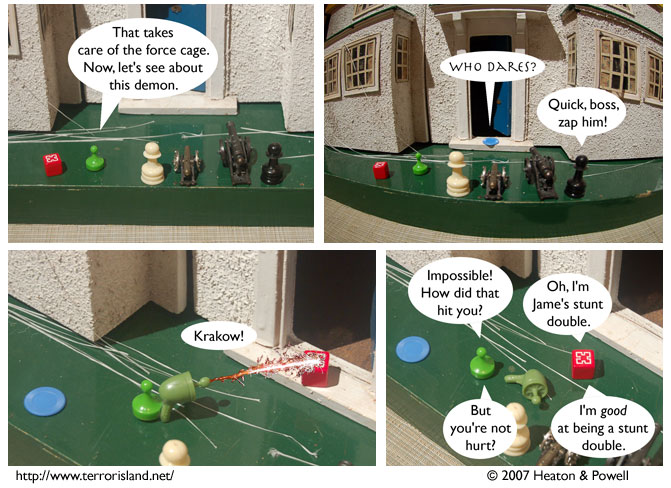

Strip #169
— Wednesday, July 11, 2007
Too bad Gunpowder wasn’t Aorist’s stunt double
Notes, Thoughts, &c.
Ben’s Notes
For the blast in panel 3, I used a picture I took of some fireworks a couple years ago. I have hundreds of fireworks pictures like that, so this ray gun might become a recurring prop.
The ray gun itself, as you can probably tell, is from an old Earthworm Jim action figure.
Lewis’s Notes
For anyone who is curious, Gunpowder did not earn his M.D. at the CotEU medical school, because they don’t have one. He also did not attend Mooniversity State. For those of you keeping track, that means there are at least three institutes of higher learning in the TIverse. Feel free to speculate on the nature of the third.